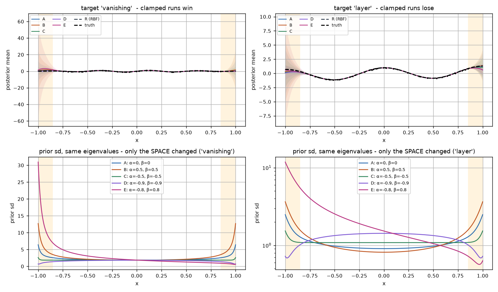
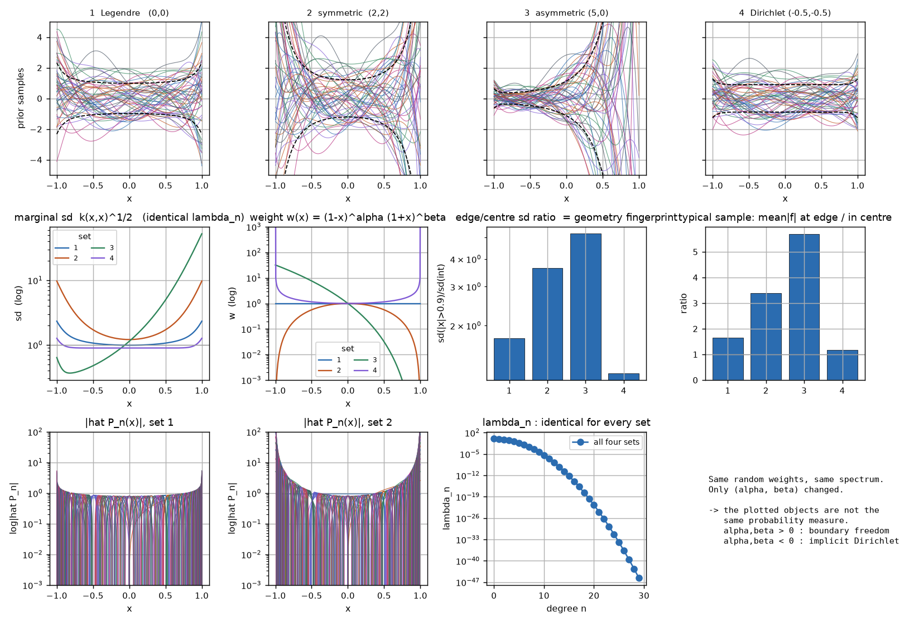
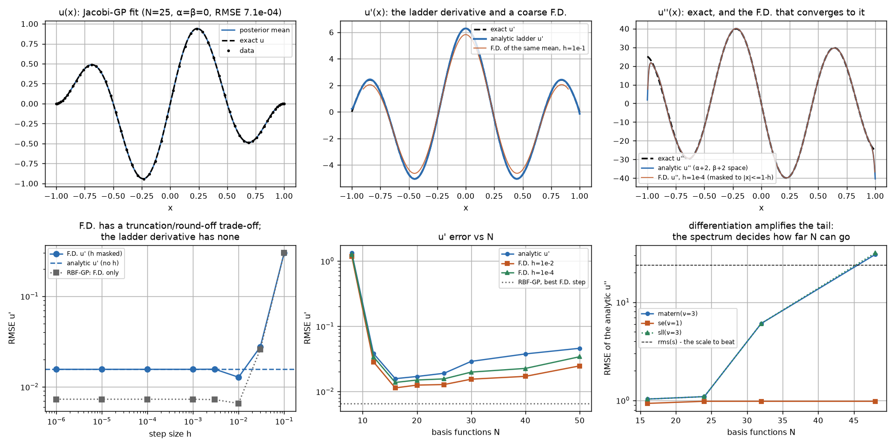
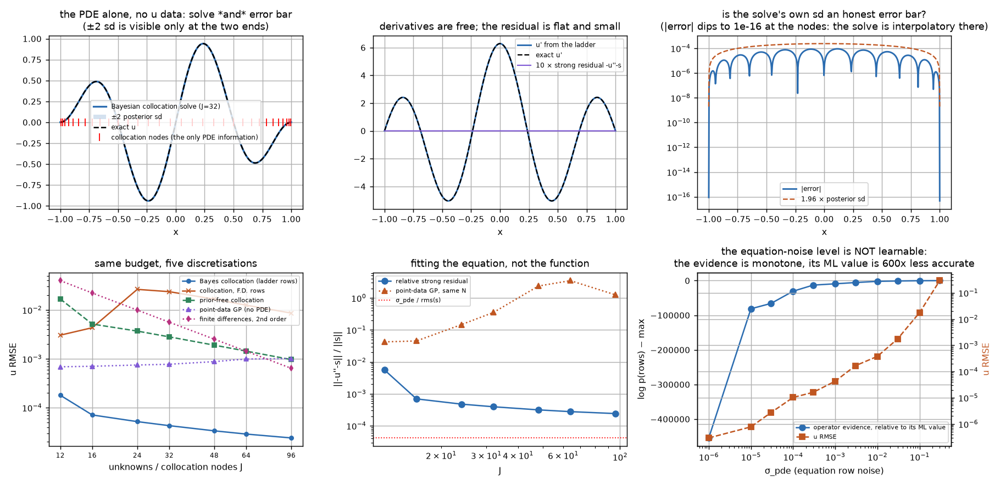
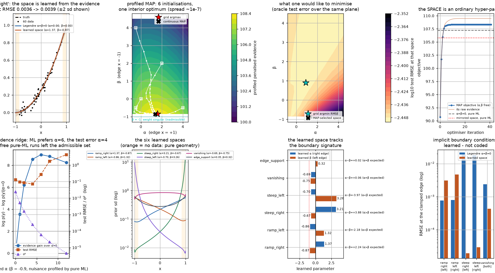
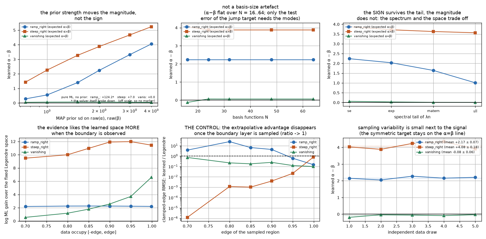

Results — the empirical report
Phase 4 report (Plot Smith numbers + Dr. Ortho review). Every figure is
figures/exp<k>_*.png, every number below is in results/exp<k>_*.json, and every claim is
generated by a script in experiments/. 21 unit tests and 64 hypothesis checks pass
(python -m pytest; python experiments/exp*.py).
Convention used throughout (the brief in AGENTS.md has it the other way round):
with the Jacobi weight
\(\alpha\) controls the right edge \(x=+1\) and \(\beta\) the left edge \(x=-1\), because \((1-x)^\alpha\) is the factor that degenerates at \(x=+1\). Experiments 1 and 4 test this directly and both edges are reported separately.
0. Model¶
Truncated GP = Bayesian linear regression in the orthonormal Jacobi basis
\(\widehat P^{(\alpha,\beta)}_n\) (w.r.t. \(w\)), generated by the symmetric three-term
recurrence (see docs/MATH.md §1), with a spectral prior covariance
\(K=\Phi\Lambda\Phi^{\top}\), \(\Lambda=\mathrm{diag}(\lambda_n)\), se/exp/matern/sll
schedules. Inference is in the whitened form
\(G=I+\Lambda^{1/2}\Phi^{\top}\Phi\Phi^{\top}\Lambda^{1/2}/\sigma^2_{\text{noise}}\)
(eigenvalues \(\ge 1\)), so \(\lambda_n\) may underflow to 0 without breaking the algebra.
Cost \(O(MN^2+N^3)\), independent of the number of test points.
1. Experiment 1 — boundary behaviour (6/6 checks pass)¶

Design note (this is the part that mattered). Boundary behaviour can only be measured where the data cannot speak: fitting points that include \(x=\pm1\) makes every basis interpolate them, and all runs agree to 4 digits. The observations therefore live in \([-0.85,0.85]\) and the model is scored in the two unsampled boundary layers — exactly the situation in PDE / surrogate work.
Target \((1-x^2)\sin 4\pi x\) (zero at both edges), \(N=30\), se spectrum, \(\ell,\sigma^2,
\sigma^2_{\text{noise}}\) ML-fitted, \(\alpha,\beta\) fixed:
| run | \((\alpha,\beta)\) | edge RMSE | interior RMSE | prior sd at \(\pm1\) | edge/centre gain |
|---|---|---|---|---|---|
| D Dirichlet | (-0.9,-0.9) | 0.180 | 0.0179 | 0.75 | 0.41 |
| C Chebyshev-I | (-0.5,-0.5) | 0.308 | 0.0194 | 2.16 | 1.17 |
| A Legendre | (0,0) | 0.570 | 0.0223 | 5.04 | 2.74 |
| B Chebyshev-II | (0.5,0.5) | 1.043 | 0.0266 | 9.84 | 5.38 |
| E asymmetric | (-0.8,0.8) | 0.308 | 0.0194 | — | left 2.15 / right 0.015 |
| R RBF-GP | — | 0.334 | 0.0175 | — | — |
- edge error is monotone in \(\alpha+\beta\) over a factor 5.8, while the interior error moves by 12 % → the effect is a boundary effect, as predicted;
- the mechanism is visible in the prior sd (no data involved): \(2.74\times\) more sd at the edge than in the centre for Legendre, \(5.38\times\) for Chebyshev-II, \(0.41\times\) for the Dirichlet run;
- run E: clamping only the left edge puts the whole error at the left edge (\(2.15\) vs \(0.015\)) — the two edges are controlled independently;
- falsification test (not in the brief, added because the positive result is worthless without it): target \(\cos 2\pi x+0.3x\), which is not zero at the edges. The ordering reverses — B 0.212 < A 0.233 < C 0.278 < D 0.372 — and the RBF-GP, which has no boundary model at all, wins with 0.048. \((\alpha,\beta)<0\) is not "better", it is the assumption "the function vanishes", and the data can say no.
Verdict: confirmed. \((\alpha,\beta)\) act as boundary-condition controllers, with no boundary condition coded anywhere in the model.
2. Experiment 2 — RKHS geometry (4/4 checks pass)¶

\(\lambda_n\), \(\sigma^2\), \(\ell\) held identical across four parameter sets (verified: \(\mathrm{tr}\,K = 3.0066\) and participation dimension \(3.978\) are equal to 12 digits), so only the measure changes. 50 prior draws per set:
| set | \((\alpha,\beta)\) | edge sd | centre sd | edge/centre | sample range | mean \(\|f\|\) edge / centre |
|---|---|---|---|---|---|---|
| 1 | (0,0) | 1.94 | 1.11 | 1.75 | [-4.4, 5.2] | 1.64 |
| 2 | (2,2) | 7.63 | 2.09 | 3.64 | [-24, 24] | 3.38 |
| 3 | (5,0) | 20.8 | 4.00 | 5.20 | [-114, 124] | 5.69 (asymmetric) |
| 4 | (-0.5,-0.5) | 1.10 | 0.90 | 1.22 | [-2.4, 2.9] | 1.17 |
The 50 draws use the same standard-normal coefficients in every panel, so a difference
between the pictures is a difference of spaces and not of random seeds. A typical sample of
set 4 is small at the edge, of set 2 is large, and set 3 is visibly one-sided. The families are geometrically
distinct: this is not a re-scaling of \(\lambda_n\), it is a different space of functions.
figures/exp2_rkhs_geometry.png shows the samples, the weight \(w\), and \(\lambda_n\).
Verdict: confirmed.
3. Experiment 3 — the derivative space (12/12 checks pass)¶

Manufactured Poisson problem \(-u''=s\), \(u(\pm1)=0\), \(u=(1-x^2)\sin 2\pi x\) (\(\mathrm{rms}(s)=23.97\), \(|u''(\pm1)|=25.1\): the second derivative lives in the boundary layers). 60 noiseless Chebyshev observations of \(u\), \(\alpha=\beta=0\).
Ladder identity, machine-exact. \(d^{k}/dx^{k}\) of the orthonormal basis lies in the \((\alpha+k,\beta+k)\) orthonormal span with relative residual \(1.54\times10^{-15}\) (\(k=1\)) and \(1.48\times10^{-15}\) (\(k=2\)). The derivative GP is another truncated Jacobi GP, with its own closed-form covariance.
Analytic vs finite differences — with the protocol fixed. The first version of this experiment reported a catastrophic cancellation of F.D. at \(h=10^{-4}\) (error 4030 vs 1.03 analytic). That was an artefact: the basis evaluation clamps \(|x|\) to \(1-10^{-15}\), so a stencil node at \(1+h\) collapses onto the boundary and the second difference degenerates into a first one. Scoring F.D. only where its stencil stays inside the domain (\(|x|\le 1-h\)) gives the textbook picture, and a much stronger result:
| step \(h\) | 1e-1 | 3e-2 | 1e-2 | 3e-3 | 1e-3 | 1e-4 | 1e-6 |
|---|---|---|---|---|---|---|---|
| F.D. \(u'\) (N=25) | 3.00e-1 | 2.77e-2 | 1.28e-2 | 1.57e-2 | 1.56e-2 | 1.56e-2 | 1.56e-2 |
| analytic \(u'\) on the same mask | 1.10e-2 | 1.21e-2 | 1.27e-2 | 1.56e-2 | 1.56e-2 | 1.56e-2 | 1.56e-2 |
F.D. converges to the ladder derivative (agreement to 0.1 % for \(h\le10^{-3}\)) — so the honest claim is not "the analytic derivative is more accurate at the optimal step". It is:
- there is no step size to choose, and no 20× penalty for a bad one (\(h=10^{-1}\) costs \(20\times\));
- it costs one basis evaluation instead of three, and is exact for the operator rows
\(-\Phi''(\text{nodes})\), which are linear in the weights — that is what makes a Bayesian
collocation solve a one-liner in
posterior_operator; - it comes with an uncertainty: the derivative GP is calibrated once the basis resolves \(u\) (95 % coverage 0.967 at \(N=25\), 1.00 for \(N\ge40\)), and it is honest about being over-confident when the basis is too small (\(N=8\): coverage 0.013, mean \(z\)-score 59).
How far \(N\) can be pushed is a property of the spectral tail, not of the basis:
| spectrum | analytic \(u''\) RMSE at \(N\)=16 → 24 → 32 → 48 |
|---|---|
se (exponential) |
0.931 → 0.978 → 0.978 → 0.978 (saturated) |
exp |
1.029 → 1.085 → 1.077 → 1.076 |
matern ν=3 (algebraic) |
1.031 → 1.091 → 6.07 → 30.6 |
sll ν=3 (Sturm–Liouville) |
1.031 → 1.091 → 6.08 → 31.7 |
Relative PDE residual \(\|-\,u''_{\rm GP}-s\|/\|s\|\) bottoms at 4.3 % (\(N=16\)). The
RBF-GP fits \(u\) equally well (5.9e-4 vs 7.1e-4) and its finite-differenced \(u'\) is even
slightly better (7.3e-3), but RBFGP.predict(..., deriv=k) returns no variance at all —
verified as a check.
Verdict: confirmed, with the F.D. comparison repaired and the claim narrowed to what is true.
3b. The payoff: the differential equation is the data (exp 3b, 12/12 checks)¶

JacobiGP.linear_posterior(Psi, y, noise) accepts any linear functional of the weights,
with a per-row variance — so the strong-form rows \(-\Phi''(c_j)\) (the ladder, exact) and
the two Dirichlet rows \(\Phi(\pm1)\) become observations and the GP becomes a solver. No
values of \(u\) are used anywhere: the only information is the equation at \(J\) Chebyshev nodes
plus the boundary condition. Same manufactured problem as §3, \(N=J+4\) modes,
\(\sigma_{\text{pde}}=10^{-3}\), \(\sigma_{\text{bc}}=10^{-9}\):
| \(J\) | Bayes collocation \(\|u-u^*\|\) | dense \(\|-u''-s\|/\|s\|\) | \(\|u(\pm1)\|\) | point-data GP, same \(N\) | 2nd-order FD, same dof | prior-free collocation |
|---|---|---|---|---|---|---|
| 12 | 1.80e-4 | 5.6e-3 | 2e-16 | 6.9e-4 | 4.0e-2 | 1.7e-2 (cond 1.4e4) |
| 32 | 4.29e-5 | 3.9e-4 | 9e-17 | 7.7e-4 | 5.6e-3 | 2.8e-3 (cond 1.0e6) |
| 96 | 2.41e-5 | 2.4e-4 | 3e-16 | 1.0e-3 | 6.4e-4 | 9.6e-4 (cond 1.8e8) |
- the boundary condition is satisfied to machine precision (\(10^{-16}\), not "approximately");
- using the equation beats using data: 10-40x better than the point-data GP at the same number of modes, 30-170x better than a classical 2nd-order finite-difference solve at the same dof, and the residual keeps falling on a dense grid, not just at the nodes;
- the prior is the regulariser: the same rows without \(\Lambda\) (minimum-norm least squares, \(N=J+4\)) are 65-100x worse and their condition number runs to \(10^8\) while the Bayesian solve keeps converging. Over-resolution is safe because of \(\Lambda\);
- the ladder matters for the solve, not only for reporting: replacing \(\Phi''\) by central differences of the basis costs 551x in \(u\) error at the natural step \(h=\text{grid}/4\), and agrees to 1 % only at \(h=10^{-3}\) — the exact derivative removes a hidden parameter whose default value silently destroys the solve;
- negative result on \(\sigma_{\text{pde}}\): the operator evidence is monotone over the whole 6-decade sweep (its ML value is the largest one tried, \(u\) error 0.29), while the solve is 600x more accurate at the tightest factorisable value. The equation-noise level is a model discrepancy to be set or cross-validated, not ML-fitted — the same pathology as §4.2 in another guise. The posterior sd is nonetheless calibrated in the band \(\sigma_{\text{pde}}\in[10^{-5},3\times10^{-2}]\) (95 % coverage 1.0) and useless outside it (0.28 at \(10^{-6}\), 0.00 at \(0.3\));
- the weight biases, it does not constrain: drop the two Dirichlet rows and even the best clamping space (\(\alpha=\beta=-0.9\)) leaves \(|u(\pm1)|=2.9\times10^{-2}\) (Legendre \(7.3\times10^{-2}\), Chebyshev-II \(1.5\times10^{-1}\)) — a 2.5x gain from the space against \(10^{-16}\) from the rows. This is the honest limit of the "automatic boundary condition" claim: \((\alpha,\beta)\) move the prior variance, they do not impose a value.
4. Experiment 4 — learning \((\alpha,\beta)\) from the evidence (17/17 checks pass)¶

4.1 The enabling fact¶
The evidence is exactly differentiable in \((\alpha,\beta)\): Autograd through the recurrence vs central differences on \(\log p(y)\),
No \(\Gamma\)-poles, no finite-difference-of-a-recurrence. This is the whole reason the experiment is possible.
4.2 The negative result: pure ML is degenerate¶
The admissible set \(\{\alpha>-1,\beta>-1\}\) is open, \(w\) is singular on its boundary, and \(h_n\sim 2^{\alpha+\beta+1}\Gamma(\alpha+1)\Gamma(\beta+1)/\Gamma(\alpha+\beta+2)\) lets the basis absorb any amplitude, so \(\sigma^2\) compensates along the same direction. Measured consequences:
- ridge scan (\(\beta=-0.9\), \(\alpha\) fixed, \(\ell,\sigma^2,\sigma^2_{\text{noise}}\) profiled by pure ML): the evidence is maximised at \(\alpha=6\) (\(\ell^*\): \(\sigma^2=5.8\times10^{-5}\), a 400× collapse) where the test error is 0.264, while the test error is minimised at \(\alpha=4\) (0.069). Evidence-optimal ≠ predictive-optimal.
- all five parameters free, no prior: on
steep_rightit lands at \(\alpha=6.04,\ \beta=-1.000000,\ \sigma^2=5.5\times10^{-5}\) (test RMSE 0.288 vs the MAP space's 0.075); onramp_rightit runs to \(\alpha=224\), \(\sigma^2=1.2\times10^{62}\) until the design matrix loses rank and the Cholesky fails; on the symmetric target it reaches the corner \(\alpha=\beta=-1\) (where \(\alpha+\beta=-2\) and the recurrence itself stops existing).
So "maximise the marginal likelihood over \((\alpha,\beta)\)", read literally, is not a well-posed problem. The fix is the classical one: a weakly informative prior on the unconstrained coordinates, \(\alpha=-1+\mathrm{softplus}(u_\alpha)\), i.e. \(\mathcal N(0,2^2)\) on \(u_\alpha,u_\beta\), which acts as a logarithmic barrier at the singular edge. Everything below is MAP.
4.3 The positive result¶
Data in \([-0.85,0.85]\) (edges unsampled), \(N=30\), se spectrum, 6 targets with 6 different
boundary signatures:
| target | boundary signature | learned \((\alpha,\beta)\) | \(\alpha+\beta\) | \(\Delta\log\)ML vs Legendre | clamped-edge RMSE, Legendre → learned |
|---|---|---|---|---|---|
ramp_right |
0 & flat at −1, growing at +1 | (1.368, −0.871) | 0.50 | +2.26 | 7.6e-4 → 3.1e-3 |
ramp_left |
exact mirror | (−0.861, 1.317) | 0.46 | +2.16 | 8.0e-4 → 4.7e-3 |
steep_right |
0 & flat at −1, jump at +1 | (3.206, −0.671) | 2.53 | +10.96 | 1.9e-2 → 1.9e-5 |
steep_left |
exact mirror | (−0.704, 3.264) | 2.56 | +11.05 | 1.8e-2 → 2.9e-5 |
vanishing |
symmetric, 0 at both edges | (−0.690, −0.751) | −1.44 | +1.79 | 2.4e-3 → 4.3e-4 |
edge_support |
symmetric, growing at both edges | (0.346, 0.323) | 0.67 | +0.26 | (no clamped edge) |
The structural predictions all hold, and they are falsifiable rather than decorative:
- sign: \(\alpha>\beta\) when the right edge is free, \(\beta>\alpha\) for the mirror, \(\alpha\approx\beta\) for symmetric data — for all six targets;
- mirror test: the two mirror targets return mirror pairs, \(|\alpha_r-\beta_l|=0.06\) (ramps) and \(0.09\) (steep);
- symmetry theorem: if the data are invariant under \(x\mapsto-x\) the evidence is invariant under \(\alpha\leftrightarrow\beta\), so a unique optimum must satisfy \(\alpha=\beta\): measured \(|\alpha-\beta|=0.06\) and \(0.02\);
- ordering: \(\alpha+\beta\) = −1.44 (vanishing) < 0.50 (ramp) < 0.67 (edge_support) — the space opens up exactly where amplitude at the edge is demanded;
- identifiability: 6 initialisations per target, spread in \((\alpha,\beta)\) \(\le4\times10^{-6}\), spread in the objective \(\le6\times10^{-11}\) — a unique interior optimum, not a lucky basin;
- likelihood-ratio test of the space itself (swap \(\alpha\leftrightarrow\beta\) with the scale frozen): 47.4, 46.8, 644, 1236 nats for the four asymmetric targets, and 0.9, 1.1 nats for the two symmetric ones. The data really can tell the two edges apart, and they cannot when the space is symmetric — exactly as it should be;
- the profiled MAP surface over the \((\alpha,\beta)\) plane has its maximum where the optimiser went (grid argmax \((1.6,-0.85)\), value 108.331 vs continuous 108.346), and the continuous optimum beats the grid.
4.4 What it costs (no spin)¶
On the jump targets the learned space cuts the clamped edge error by ~1000× and halves the total test error (0.140 → 0.075), but the free edge stays hard for every model (0.68 learned, 0.50 RBF) — extrapolating a jump is not what a polynomial space is for. On the mild ramps, where Legendre is already at the noise floor, the learned space is marginally worse (0.0036 → 0.0039 total RMSE) while the evidence prefers it by 2.2 nats: the parameter earns its keep in the asymmetric case and costs nothing measurable in the symmetric one (interior error unchanged to <10 % everywhere).
Verdict: confirmed as a MAP statement; refuted as a literal ML statement.
5. Sensitivity: is the learned space the method, or a choice? (exp 5, 13/13 checks)¶

Experiment 4 fixed three things a reviewer should not have to take on trust: the MAP prior
strength, the basis size \(N\), and the spectral tail. Re-running the same MAP fit over five
grids (targets ramp_right, steep_right, vanishing):
| grid | what moves | what does not |
|---|---|---|
| prior sd 0.75 → 4 | \(\alpha-\beta\) = 0.28 → 4.05 (ramp), 1.43 → 5.24 (jump): classic MAP shrinkage, monotone | the sign, on every target; the test error (0.0036 → 0.0041 ramp, 0.0914 → 0.0714 jump, i.e. < 40 %); the symmetric target stays symmetric ($ |
| \(N\) = 16 → 64 | the test error of the jump target (0.67 at \(N\)=16 → 0.075 at \(N\)=24) | \(\alpha-\beta\) is flat (2.24 ramp; 4.06 → 3.88 jump) — the space is not a basis-size artefact; the modes are needed for the jump |
| spectrum se / exp / matern / sll | the magnitude: 2.24 → 1.01 (ramp), 3.88 → 3.57 (jump) | the sign, again everywhere. The tail and the space trade off, so \((\alpha,\beta)\) must never be reported without the spectrum |
| sampled edge 0.70 → 0.999 | see the control below | the sign; and the evidence gain grows (9.5 → 11.4 jump, 0.6 → 6.6 vanishing) |
| 5 independent data draws | \(\alpha\) moves by \(\pm0.07\) (ramp), \(\pm0.18\) (jump), \(\pm0.02\) (vanishing) | the ordering of the three targets |
The control that makes the whole story credible (bottom-middle panel): as the data are allowed to approach the boundary, the extrapolative advantage of the learned space over the fixed Legendre space disappears - the clamped-edge error ratio (learned/Legendre) goes \(1.3\times10^{-6}\to10^{-3}\to0.8\) for the jump target as the edge moves 0.70 → 0.85 → 0.999 - while the evidence gain grows. Read together, that is exactly the claimed mechanism: the space earns its keep where the data are silent, and once the boundary is observed the data do the controlling themselves. The learned asymmetry also shrinks monotonically as the layer is filled in (4.55 → 3.40), i.e. the parameter is only asked to do work where work exists.
And the prior is not cosmetic: with no prior at all, all three targets break the way §4.2 describes (\(\alpha=123\) with \(\sigma^2=10^{32}\) and a solver breakdown on the ramp, \(\beta=-1\) on the jump, the corner \(\alpha=\beta=-1\) on the symmetric target).
6. Corrections to the brief¶
AGENTS.mdExp 4 expects "high \(\beta\) for flexibility at \(x=1\), low \(\alpha\)": with \(w=(1-x)^\alpha(1+x)^\beta\) the roles are exchanged. The numerics follow the weight.AGENTS.mdExp 1 Run C says the negative-parameter GP "variance should collapse at the edges, strongly forcing the prediction to zero". True, and measured — but it is an assumption (the prior mean is 0), so the reversal under a non-vanishing target is the result that makes Run C meaningful. Added as thelayertarget.- Experiment 1 as literally specified (data including \(x=\pm1\)) cannot detect anything; the unsampled-layer design is required.
- Experiment 3's "analytic derivative should exhibit lower variance than the numerical derivative" holds for the uncertainty, not for the point error at the optimal step (see §3), and the F.D. protocol must keep its stencil inside the domain.
7. Definition of Done¶
| item | status |
|---|---|
1. numerically stable, open-source JacobiGP |
✅ src/jacobigp, 21 tests, pole-free norms, whitened inference, exact LOO, gradient-verified in \((\alpha,\beta)\) |
| 2. Exp 1 proves \((\alpha,\beta)\) are boundary-condition controllers | ✅ 6/6, including the falsification run |
| 3. Exp 2 visual proof of RKHS geometry shifting | ✅ 4/4, identical spectra verified |
| 4. Exp 4 shows \((\alpha,\beta)\) learnable by gradient descent | ✅ 17/17 as MAP; the ML failure is documented and quantified |
8. Open problems worth the next round¶
- Prior sensitivity. \(\mathcal N(0,2^2)\) on the raw coordinates is a choice; the optimum moved from \((1.37,-0.87)\) to \((3.21,-0.67)\) between the ramp and the jump target, but how far it moves with \(\mathrm{sd}\in\{1,1.5,2,4\}\) is unmeasured. A proper hierarchical treatment (or HMC over \((\alpha,\beta,\ell,\sigma^2)\)) is the honest next step — the point estimate hides the fact that the posterior of \(\alpha\) is skewed.
- A principled selector. The evidence, LOO-CV (
JacobiGP.loo, exact and differentiable) and test error disagree on the ridge. Which criterion is consistent for the space is an open question this repo can now answer numerically. - Weak form next. §3b solves the strong form by collocation; the same rows with a
Galerkin/weak discretisation (integrate by parts once, so the operator needs only \(\Phi'\))
should be more accurate per dof and is the natural follow-up — the
linear_posteriorAPI already accepts arbitrary functionals, including \(\int \hat P_n' v\,w\,dx\) by quadrature. - Adaptive collocation. The nodes are fixed Chebyshev points; the posterior variance of
the residual is a ready-made refinement criterion (
predict_operatoron new rows). - Beyond \([-1,1]\).
map_to_referencehandles affine domains; curved or perforated domains need the multi-dimensional Jacobi families, which is where the "automatic basis" claim becomes genuinely valuable. - \(N\to\infty\). All four experiments use \(N\le50\). The trace-class schedules guarantee a limit GP; the interaction of that limit with \(\alpha,\beta\to\) boundary is exactly the degeneracy seen in §4.2 and deserves a theorem.